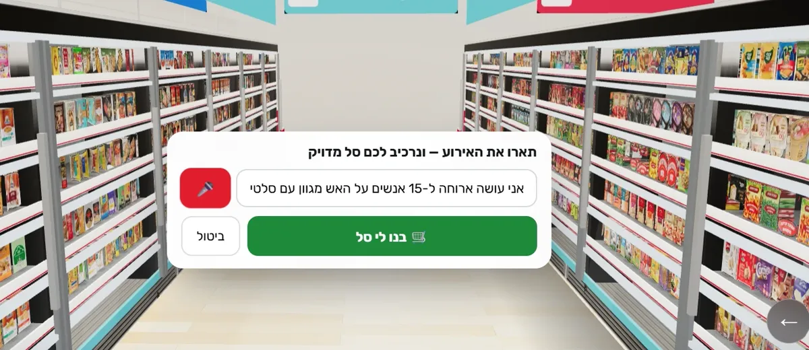
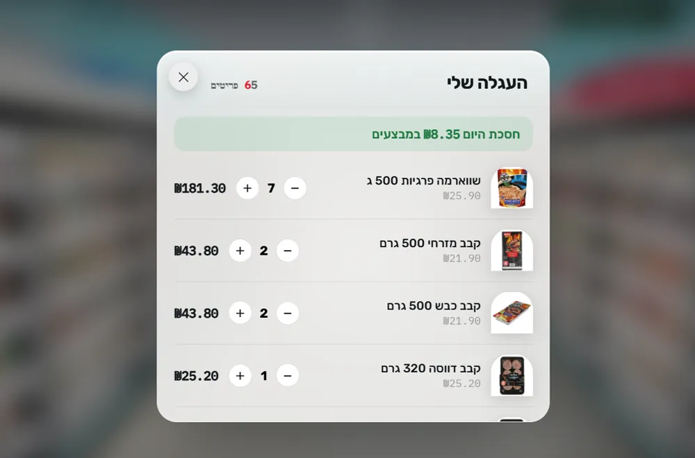
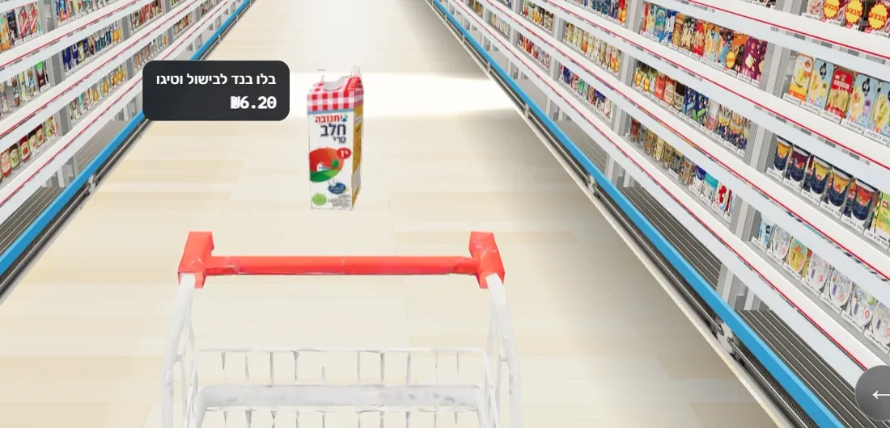
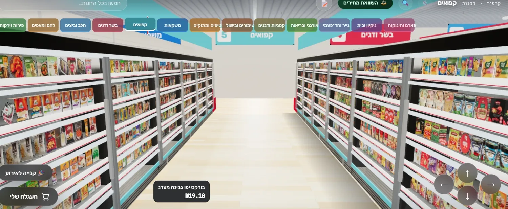

חימוצר · כבר בשטח
הסופר הווירטואלי
חנות שלמה שהולכים בה. לא הדמיה, מוצר חי.
- 13 מחלקות
- קטלוג אמיתי והשוואת מחירים
- עגלה שנוסעת איתך
- סל שלם לאירוע ממשפט אחד
AR · בשלבי הקמה08 / 2026
הדבר הראשון כבר עומד: סופר שלם. השאר נבנה מסביבו, והדף הזה אומר בדיוק מה קיים, מה בעבודה ומה הלאה.

חימוצר · כבר בשטח
חנות שלמה שהולכים בה. לא הדמיה, מוצר חי.
לבעלי עסקים
כל מה שלמטה הוא צילום מסך מהחנות החיה, לא הדמיה. תחליפו את המוצרים בשלכם וזה העסק שלכם: לקוחות מסתובבים במעברים מהבית, וסוכן חכם מרכיב להם סל ממשפט אחד.
"אני עושה הערב ארוחה ל־15 אנשים. על האש מגוון, עם סלטים ליד."
הסוכן, סל מוכן
65 פריטים, מתומחרים מהקטלוג האמיתי, כשהמבצעים של היום כבר בפנים.

01 הלקוח מתאר את האירוע, בהקלדה או בקול

02 הסל חוזר מתומחר, כולל המבצעים

03 או קונים ביד: העגלה נוסעת איתכם

04 שלוש־עשרה מחלקות, כל אחת מעבר אמיתי
בוטיק, בית מרקחת, משתלה, חנות כלי עבודה. אם זה יושב על מדפים, זה יכול לעבוד ככה.
עולמות 360 שנכנסים אליהם מהדפדפן: חדר אחרי חדר, דלתות, חלונות מידע.
שכבות מידע על מרחבים אמיתיים, דרך הטלפון, בלי אפליקציה. מכוונים את המצלמה, המידע נצמד למקום.

עיגון לפי סמנים ומשטחים: קיר, שולחן, מדף, כל אחד יודע להגיד מה הוא ומה עליו.

עסק, מוסד או חלל שמתאים לשכבת מידע. נשמח להתחיל איתכם כשזה מוכן, ולהראות מה כבר עובד עכשיו.
לדבר עם לידור בוואטסאפ